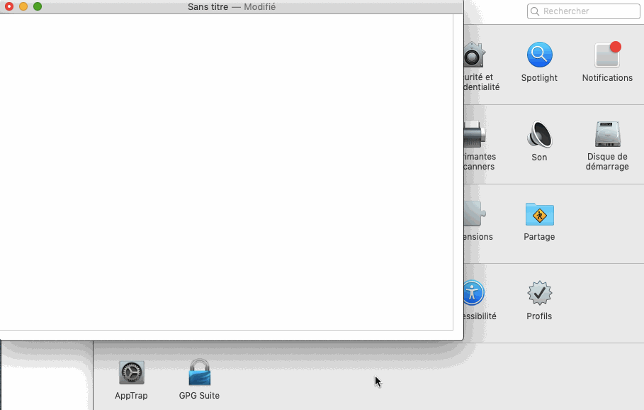

Fichier de substitutions épicènes pour macOS
À partir de macOS Sierra, télécharger ecriture-epicene.plist, ouvrir Préférences Système → Clavier et faire glisser le fichier téléchargé dans la liste des substitutions.
Vous pouvez obtenir plus d’informations sur les substitutions sous macOS sur le site d’Apple.

Pour suggérer de nouvelles substitutions, faites une pull request sur GitHub ou envoyez-moi un mail.